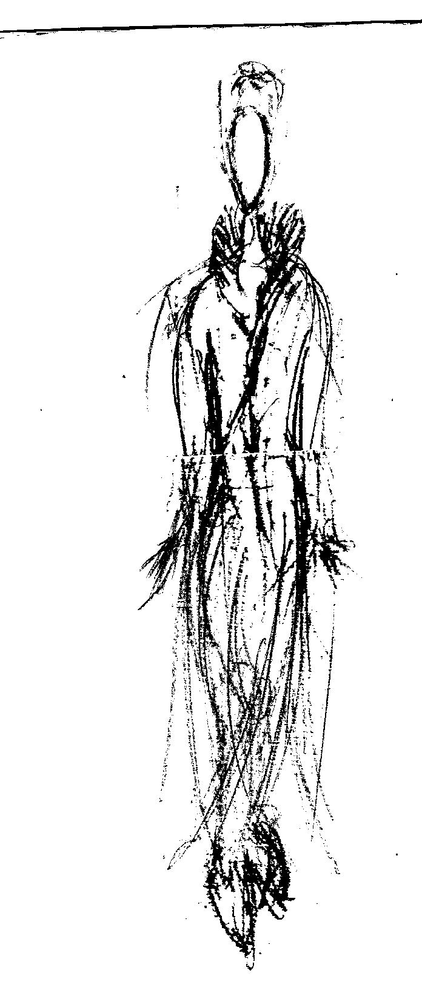
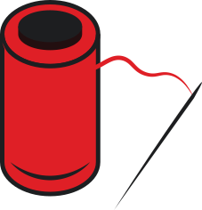
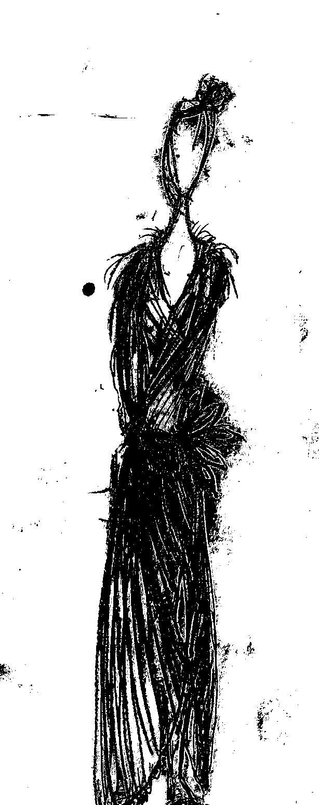
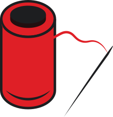

Date: 16 August 2019

Clothes

Date: 16 August 2019
Date: 16 August 2019
Clothes
Date: 16 August 2019
I have more than 300 different sketches about wearing and costumes. I want to make my own wear collection that may contain my sense.
I know about color, forms and psychology describes it really good. I want to do all design by my hands. Because it will be useful experience for all life. I want to create great constructions from mind to paper and from paper to product.
My wear design contain different styles from past and present time. Contain gracious and simplicity. There are few colors complementation, because I think that it is more beautiful.
There are a few investments needed. My predictions, that I need only 1 000 – 10 000 $. I do plan of this type of company at 16 years old and I think that here may be only materials and marketing at first time. At more, I need to make view of this collection. Only about 30% of all money comes to material; 10% to environment and knowledge; 50% marketing; 10% may be salary for workers.
I do it by myself and all first workers will be models. Time for create first sale may be about 12 – 20 weeks.
Result of my predictions may be 1 200 - 14 700 $. Time 12 – 24 weeks.
I want to create some first collection, that may be beginning of my company in design way.
There are small description about my design